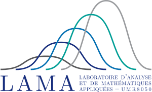
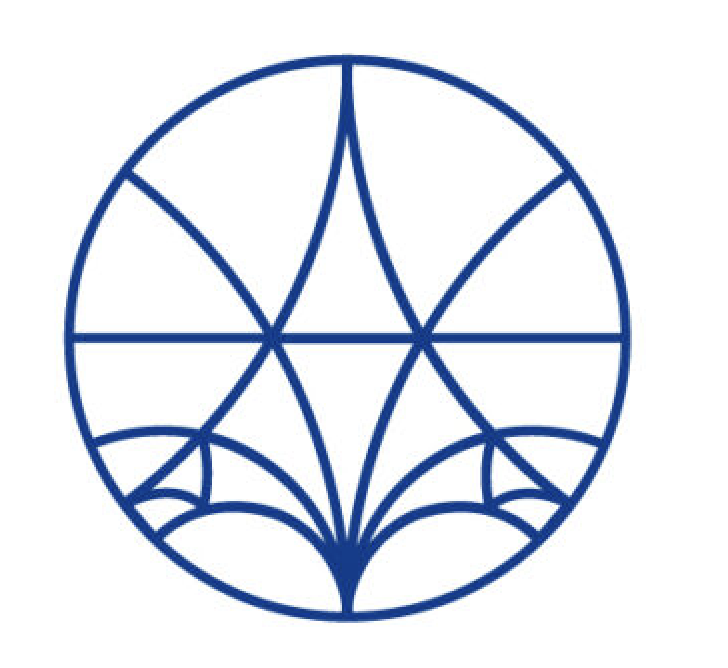

About Me
I am a second year Master's (M2) student in Probability and Random Models (M2-PMA) with major stochastic process at Sorbonne Université.
I have been fortunate to work on several research projects, including the study of bi-Lipschitz equivalence of separated nets in Banach spaces with Alexandros ESKENAZIS, and collective motion modeling with Diane PEURICHARD.
Interests
- Probability theory
- Random walk
- Disordered system
- Applications in statistical physics
News
- [Apr 2026] I’ll be working on the long-range Ising model with Arnaud Le Ny at Université Paris-Est Créteil (UPEC) as my M2 internship from April-20 to June-20 on 2026.
Education
Sorbonne Université
Master 2 in Probability and Random Models (PMA)
2025-2026
Sorbonne Université
Master 1 Mathematics and Applications
2024-2025
Sorbonne Université
Double Bachelor's degree in Mathematics and Physics
2020-2024
Research Experience

Université Paris-Est Créteil (UPEC)
M2 Research Intern
Topic: Long-range Ising model
Advisor: Arnaud Le Ny
April 2026 - June 2026

Sorbonne Université
M1 Research Intern
Topic: Bi-Lipschitz equivalence of separated nets in Banach spaces
Advisor: Alexandros ESKENAZIS
2025
Sorbonne Université
L3 Research Intern
Topic: Collective motion modeling
Advisor: Diane PEURICHARD
2024